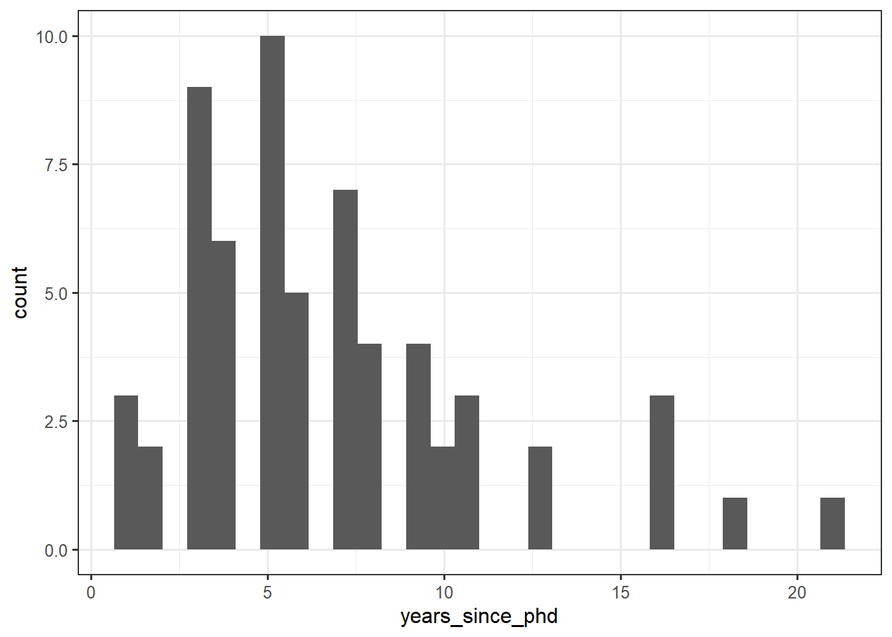
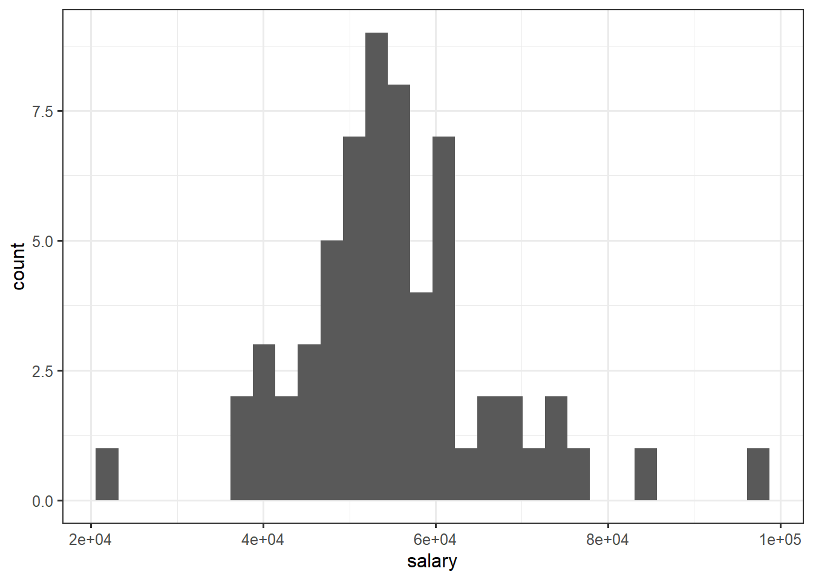
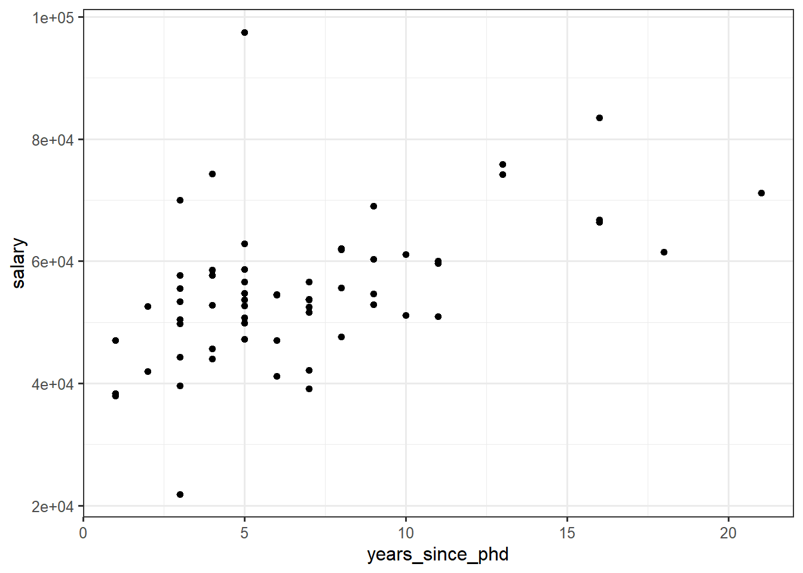
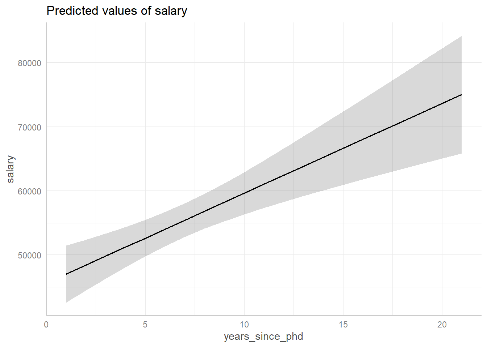
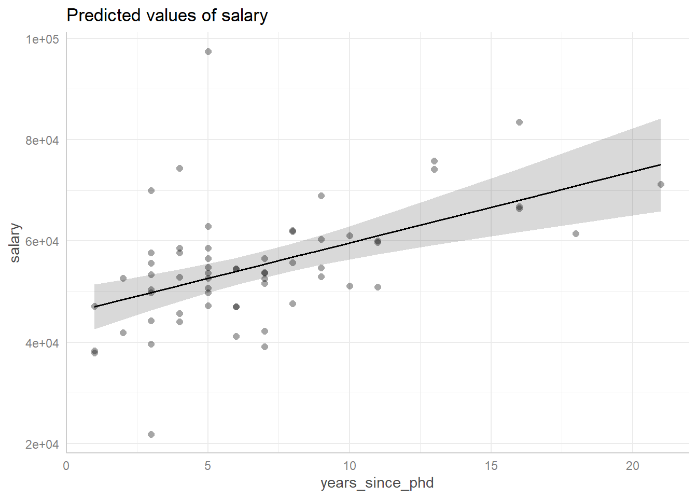
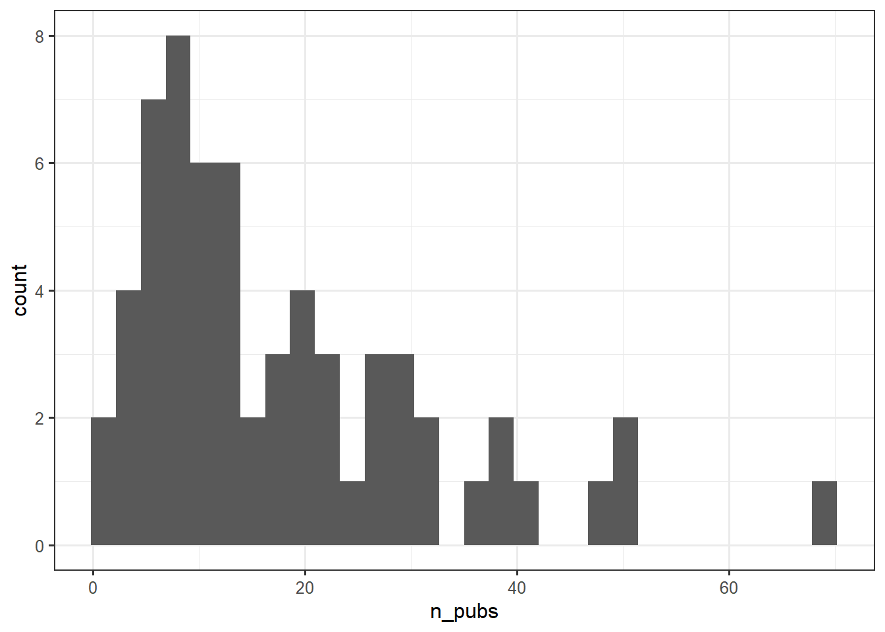
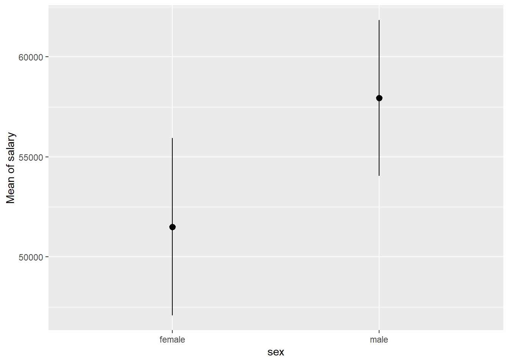
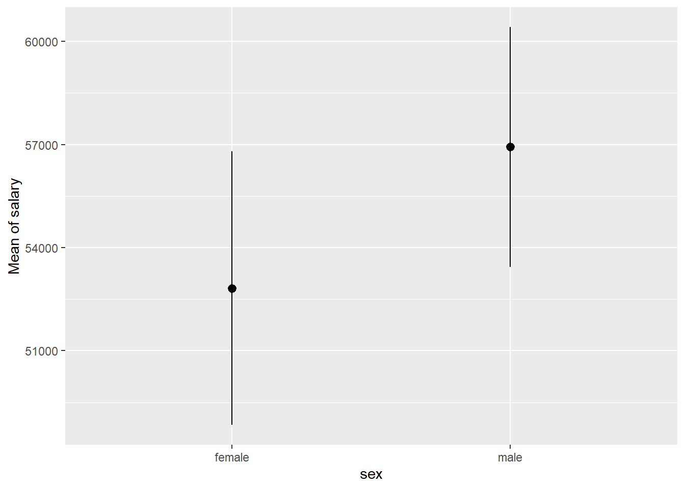
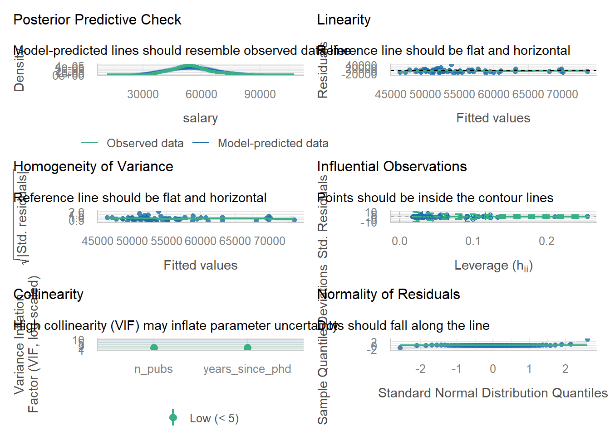

# A tibble: 62 × 5
years_since_phd n_pubs sex n_cites salary
<dbl> <dbl> <chr> <dbl> <dbl>
1 3 18 female 50 21876
2 6 3 female 26 54511
3 3 2 female 50 53425
4 8 17 male 34 61863
5 9 11 female 41 52926
6 6 6 male 37 47034
7 16 38 male 48 66432
8 10 48 male 56 61100
9 2 9 male 19 41934
10 5 22 male 29 97454
# ℹ 52 more rows2 Regression Recap
Before jumping into generalized linear models (GLMs), we will recap important foundations of general linear models, such as simple and multiple regression.
2.1 Data Demonstration
In this data demo, we will first review loading R packages and data, and then review key aspects of simple and multiple linear regression.
The data for this chapter is toy data about academic performance after obtaining a Ph.D. including salary information. It is composed of both continuous and categorical variables.
- Data: yearspub.csv
2.2 Loading the Packages and Reading in Data
In R, packages must be installed before using them. Once installed, then they can be activated in session with the library() command.
Note
One way of installing new R packages is to use the install.packages() command
Note
read_csv() comes from the tidyverse package. As used here, by default it assumes that the file yearspubs.csv is in the same folder directory as the R analysis file.
Note
Each package we load provides functionality:
easystats: For making table outputs from the models.easystatswebsitetidyverse: Provides a suite of easier to use analysis commands.tidyversewebsiteggeffects: Provides plotting and visualizations of the models.ggeffectswebsite
Here’s a table of our variables:
| Variable | Description | Values | Measurement |
|---|---|---|---|
yrs_since_phd |
Years since obtaining Ph.D. | Integer | Scale |
n_cites |
Number of Academic Citations | Integer | Scale |
salary |
Current Salary Figures | Integer | Scale |
n_pubs |
Number of Academic Publications | Integer | Scale |
sex |
Male or Female | Characters | Nominal |
2.3 Prepare Data / Exploratory Data Analysis
It is always a good first step to plot data prior to fitting any model.
First, let’s consider the distributions, as histograms, of years_since_phd and salary using the ggplot() function1. You can learn more about how to use ggplot() here.
ggplot(data=yearspubs, aes(years_since_phd)) +
geom_histogram() + mytheme
Notice that years_since_phd appears somewhat positively skewed (to the right tail).
ggplot(data=yearspubs, aes(salary)) +
geom_histogram() + mytheme
In contrast to years_since_phd, notice that salary is more normally distributed.
Now, we consider the relationship between years_since_phd and salary using a scatter plot. Notice that, for the most part, we can see a linear relationship such that salary tends to increase with the number of additional years after obtaining a Ph.D.
## Explore salary-seniority relationship
ggplot(data = yearspubs, mapping = aes(x = years_since_phd, y = salary)) +
geom_point() + mytheme
3 Simple Regression Example
Now, we will fit a simple linear regression with salary as the outcome variable and years_since_phd as the predictor variable using the lm() function, and consider the results. We will then print a summary table of the model results using the model_parameters() function from the easystats package. Therefore, model_paramters() shows the model’s estimated coefficient values.
Tiplm() syntax
## Fit linear model and print parameters
fit <- lm(
formula = salary ~ years_since_phd,
data = yearspubs
)
model_parameters(fit)
## Parameter | Coefficient | SE | 95% CI | t(60) | p
## -------------------------------------------------------------------------------
## (Intercept) | 45625.47 | 2473.12 | [40678.49, 50572.46] | 18.45 | < .001
## years since phd | 1400.94 | 308.87 | [ 783.12, 2018.77] | 4.54 | < .001
##
## Uncertainty intervals (equal-tailed) and p-values (two-tailed) computed
## using a Wald t-distribution approximation.By default, this prints in code format as above. However, for the rest of the modules, we will be using a prettier format called markdown format with print_md():
model_parameters(fit) |> print_md()| Parameter | Coefficient | SE | 95% CI | t(60) | p |
|---|---|---|---|---|---|
| (Intercept) | 45625.47 | 2473.12 | (40678.49, 50572.46) | 18.45 | < .001 |
| years since phd | 1400.94 | 308.87 | (783.12, 2018.77) | 4.54 | < .001 |
This simple regression line is defined by the formula:
\[ y_{\hat{i}} = \beta_0 + \beta_1 x \]
3.1 Parameter Table
From the results output, we can assess each parameter:
The
intercept(\(\beta_0\)) is the estimated salary for a professor with zero years since PhD: $45113.71, 95% CI: [$40114.89, 50112.53]. This is significantly different from zero (p < 0.001).The coefficient for
years_since_phd(\(\beta_1\)) is $1400.94, 95% CI: [$783.12, $2018.77]. Therefore, for every additional year of since PhD was associated with an increase of $783.12 to $2018.77. This zero-order effect (since it is the only predictor variable) is significantly different from zero (p < 0.001) at $1400.94.
Tip95% CI
Confidence intervals (CI) in the frequentist interpretation is quite wordy but needs to be understood:
“If we repeated the experiment over and over again (with different samples of the same size) and computed the 95% CI in each sample, then 95% of those intervals would contain the population parameter value.”
Alternative, reasonable interpretations can be as follows:
“We can be 95% confident that the 95% CI contains the population mean.”
- This first alternative isn’t our favorite as it implies a view of probability as belief (which isn’t very frequentist).
“The 95% CI contains highly reasonable estimates of the population mean.”
3.2 Effect Sizes
By standardizing the data and then refitting the data, we can calculate the effect size of years_since_phd.
## Calculate effect sizes by standardizing
standardize_parameters(fit) |> print_md()| Parameter | Std. Coef. | 95% CI |
|---|---|---|
| (Intercept) | 2.11e-16 | [-0.22, 0.22] |
| years since phd | 0.51 | [ 0.28, 0.73] |
Using Cohen’s D guidelines, d = 0.51 which is a medium sized effect.
We can also used this standardized model to make the following statement:
- For every one SD increase in
years_since_phd, we would expect a 0.51 increase insalary, \(\beta_1\) = 0.51, 95% CI: [0.28, 0.73], p<0.001.
3.3 Model Performance
One purpose of model fitting is to demonstrate accurate predictions – given a new X, can we reasonably predict a new Y?
Three popular metrics of model fit performance in service of prediction are adjusted \(R^2\), AIC, and BIC.
## Calculate model performance indices
model_performance(fit) |> print_md()| AIC | AICc | BIC | R2 | R2 (adj.) | RMSE | Sigma |
|---|---|---|---|---|---|---|
| 1325.9 | 1326.3 | 1332.3 | 0.26 | 0.24 | 10151.69 | 10319.50 |
When comparing models, a higher adjusted \(R^2\) is a better fit, and a lower AIC/BIC is a better fit. Here, we aren’t comparing two competing models, but it is easy to obtain these metrics with the packages we loaded.
3.4 Ploting Model Predictions
Lastly, the model predictions are easy to plot with predict_response. The grey bands show our uncertainty along the best fit line, and you can incorporate data into the plot as well with show_data = TRUE. These plots visualize the parameter estimates we assessed earlier in the parameter tables.
## Plot model-based predictions
predict_response(fit, terms = "years_since_phd") |> plot()
predict_response(fit, terms = "years_since_phd") |> plot(show_data = TRUE)Data points may overlap. Use the `jitter` argument to add some amount of
random variation to the location of data points and avoid overplotting.
4 Multiple Regression Examples
Multiple regression allows us to control for the effects of multiple predictors on the outcome. Statistically “controlling” for a predictors is when the shared variance between predictors is accounted for/removed so that the unique contribution of any one predictor variable on the outcome variable is estimated. We will divide our recap across different multiple regression scenarios.
4.1 Two Continuous Predictors
First, we will fit a multiple linear regression with salary as the outcome variable and years_since_phd and n_cites as the predictor variables.
Let’s proceed like before when we introduce a new variable and plot the distribution for n_pubsas a histogram.
ggplot(data = yearspubs, aes(n_pubs)) +
geom_histogram() + mytheme`stat_bin()` using `bins = 30`. Pick better value `binwidth`.
Here’s how we can use the lm() function to fit a multiple regression with salary as the outcome variable and years_since_phd and n_pubs as the predictor variables.
| Parameter | Coefficient | SE | 95% CI | t(59) | p |
|---|---|---|---|---|---|
| (Intercept) | 45113.71 | 2498.17 | (40114.89, 50112.53) | 18.06 | < .001 |
| years since phd | 1075.21 | 406.75 | (261.30, 1889.11) | 2.64 | 0.010 |
| n pubs | 151.18 | 123.52 | (-95.98, 398.34) | 1.22 | 0.226 |
This multiple regression is defined by the formula:
\[ y_{\hat{i}} = \beta_0 + \beta_1 x_1 + \beta_2 x_2 \]
Multiple regression allows us the ability to control the relationship of multiple predictors on the outcome variable. As aforementioned, statistically “controlling” for a predictors is when the shared variance between predictors is accounted for/removed so that the unique effect of any one predictor variable on the outcome variable is estimated. We then can ask the following questions:
What is the relationship between \(x_1\) and \(y\) if we hold \(x2\) at a constant value? e.g., What is the salary difference between prof A (woman, 10 years) and prof B (woman, 11 years)?
If we already know \(x2\), how much does learning about \(x1\) change our prediction of \(y\)? e.g. how much does learning that prof C is male change our prediction of their salary if we already knew they have 15 years of seniority?
Remember, as partial effects, we are finding the unique effect of a predictor when controlling for other predictors explicitly in the model. Importantly, we can’t say anything when controlling for variables not in the model.
4.1.1 Parameter Table Interpretation
From the parameter table above, we can make the following statements:
The intercept is the estimated
salaryfor a professor with zero years since PhD and zero publications: $45113.71, 95% CI: [40114.89,50112.53].The partial effect of
n_pubswas not significantly different from zero at $151.18. When controlling foryears_since_PhD, each additional publication was associated with an additional −$95.98 to $398.34.The partial effect of
years_since_phdwas significantly different from zero at $1075.21. Thus, when controlling forn_pubs, each additional year since PhD was associated with an additional $261.30 to $1889.11.
TipPartial Effects vs. Zero-Order Effects
When we use multiple regression, the slope (\(beta\)) parameters are called “partial” (i.e., unique) effects since the model is controlling for each predictors’ influence on the outcome variable.
In contrast, with simple linear regression that has only one predictor, that predictor’s effect is called a “zero-order” (i.e., total) effect.
The decision to focus on partial effects or zero-order effects depends on the specific aims of the research question beacuse they answer different questions.
4.2 One Dummy Coded Predictor
In cases of a categorical predictor(s), we need to re-coded them such that each of the categories/groups they represent can be mathematically represented as a code variable. All coding systems turn a categorical variable into g-1 code variables.
- So, for example, if we have 6 groups, we need 5 code variables.
The easiest way to turn a categorical predictor into the code variables is to use the factor() function.
- It will use the first level (in this case, “female”), as the reference group.
- It will name the slope “factorNonref” (e.g., sexMale).
Note
When we use functions like factor() we have explicitly written out the input arguments, such as levels, in order to show exactly what information the function is processing.
TipThe $
As a reminder, the “$” symbol extracts one of the columns in the dataframe.
In order to interpret the results, it’s important to understand how the code variables are integrated into the model’s formula:
\[ y_{\hat{i}} = \beta_0 + \beta_1 C_{1i} \]
The intercept \(\beta_0\) is the value of \(y_{\hat{i}}\) when \(C_1\) = 0. In other words, the reference group’s average value.
The slope \(\beta_1\) is the change in \(y_{\hat{i}}\) when \(C_1 + 1\). In other words, it is the group difference in average value, and adding it to the intercept means we are focusing on the non-reference group’s outcome value.
Note that if you have more than two more categories per variable (here, we only have two groups/categories), you will use the exact same approach but have more than one slope.
Now, we can fit and interpret the model:
| Parameter | Coefficient | SE | 95% CI | t(60) | p |
|---|---|---|---|---|---|
| (Intercept) | 51501.85 | 2214.97 | (47071.25, 55932.46) | 23.25 | < .001 |
| sex (male) | 6441.78 | 2948.02 | (544.86, 12338.69) | 2.19 | 0.033 |
Therefore:
The average salary of female academics is $51,502.
Males academics make $6,442 more on average. So their average salary is $51,502 + $6,442 = $57944
4.2.1 Estimating means and plot
We will use the estimate_means() function to accomplish the same thing we did above to obtain average values.
| sex | Mean | SE | 95% CI | t(60) |
|---|---|---|---|---|
| female | 51501.85 | 2214.97 | (47071.25, 55932.46) | 23.25 |
| male | 57943.63 | 1945.43 | (54052.18, 61835.07) | 29.78 |
Variable predicted: salary; Predictors modulated: sex
Lastly, we can visualize like so:
plot(gmeans1)
4.2.2 Contrast
To see if this apparent difference of average salary between male and female academics is statistically significant, we can perform a contrast.
contrasts <- estimate_contrasts(fit3, contrast = "sex")
contrasts |> print_md()| Level1 | Level2 | Difference | SE | 95% CI | t(60) | p |
|---|---|---|---|---|---|---|
| male | female | 6441.78 | 2948.02 | (544.86, 12338.69) | 2.19 | 0.033 |
Variable predicted: salary; Predictors contrasted: sex; p-values are uncorrected.
Therefore, there is a statistically significant difference between male and female academics, p < 0.05.
4.3 One Continuous and One Dummy Coded Predictor
Now, we will fit a multiple linear regression with salary as the outcome variable and with years_since_phd and sex as the predictor variable.
| Parameter | Coefficient | SE | 95% CI | t(59) | p |
|---|---|---|---|---|---|
| (Intercept) | 43989.01 | 2667.12 | (38652.12, 49325.91) | 16.49 | < .001 |
| years since phd | 1300.30 | 312.36 | (675.28, 1925.32) | 4.16 | < .001 |
| sex (male) | 4109.49 | 2673.09 | (-1239.35, 9458.34) | 1.54 | 0.130 |
4.3.1 Estimating Means
Recall that prior to fitting the multiple regression, we changed sex into a categorical variable using the factor() function. This is an example of dummy coding. Therefore, once we fit the multiple regression we were able to separate response values based on different factor levels.
In the case of sex, we have a binary categorical variable, so we can obtain average values of salary for each sex category while also accounting for (i.e. controlling for) the (partial) effect of years_since_phd.
We will use the estimate_means() function to accomplish this.
gmeans <- estimate_means(fit4, by = "sex")
gmeans |> print_md()| sex | Mean | SE | 95% CI | t(59) |
|---|---|---|---|---|
| female | 52818.46 | 1989.11 | (48838.27, 56798.66) | 26.55 |
| male | 56927.96 | 1742.00 | (53442.23, 60413.69) | 32.68 |
Variable predicted: salary; Predictors modulated: sex; Predictors averaged: years_since_phd (6.8)
We can also create a plot to visualize the means.
plot(gmeans)
We can now more easily see that, averaged over all years_since_phd values, male academics earn on average more salary than women academics. However, as the plot shows, there is variability within each factor level.
To see if this apparent difference of average salary between male and female academics is statistically significant, we can perform a contrast.
contrasts <- estimate_contrasts(fit4, contrast = "sex")
contrasts |> print_md()| Level1 | Level2 | Difference | SE | 95% CI | t(59) | p |
|---|---|---|---|---|---|---|
| male | female | 4109.49 | 2673.09 | (-1239.35, 9458.34) | 1.54 | 0.130 |
Variable predicted: salary; Predictors contrasted: sex; Predictors averaged: years_since_phd (6.8); p-values are uncorrected.
Therefore, there is not a statistically significant difference in means across years_since_phd between male and female academics, p = 0.130
4.4 Interactions
Interactions asks us to consider the extent to which the effect of one predictor depends on the value on another predictor. It is up to the investigator, guided by theory and previous research, to consider if including interaction terms are relevant for the research question.
Again, we include interaction terms like so:
\[ y_{\hat{i}} = \beta_0 + \beta_1 x_1 + \beta_2 x_2 + \beta_3 x_1 x_2\] - \(\beta_3\) is the slope of the interaction term (the product of two or more predictors)
We can now fit our new model with the interaction term:
| Parameter | Coefficient | SE | 95% CI | t(58) | p |
|---|---|---|---|---|---|
| (Intercept) | 45072.28 | 4462.64 | (36139.34, 54005.22) | 10.10 | < .001 |
| years since phd | 1112.81 | 692.27 | (-272.92, 2498.54) | 1.61 | 0.113 |
| sex (male) | 2656.21 | 5486.15 | (-8325.51, 13637.92) | 0.48 | 0.630 |
| years since phd × sex (male) | 236.36 | 777.28 | (-1319.53, 1792.25) | 0.30 | 0.762 |
In this example, the years_since_phd by sex interaction term was not significant (p = 0.762).
TipThe * symbol for interactions
In the code block above, we specified the interaction term by writing out its explicit form. There is a short-form way in R for writing out all the interaction terms by using the asterisk(*) symbol. This is especially helpful when there are more than two predictor variables where higher-order interaction terms are possible (you would not want to accidentally forget an interaction term!).
Using the example above:
- Long Form Fomula: salary ~ years_since_phd + sex + years_since_phd:sex
- Short Form Formula: salary ~ years_since_phd*sex
Remember, both forms are equivalent.
We can visualize the interaction by making a marginal effects, or “spotlight”, plot.
Note that in this multiple regression with an interaction term that each level of sex has a different slope. We can estimate these slopes, or the “simple” effect of years_since_phd on salary for each category of sex, with estimate_slopes(). The term “simple” is a result of adding the interaction term in the model.
estimate_slopes(fit5, trend = "years_since_phd", by = "sex") |> print_md()| sex | Slope | SE | 95% CI | t(58) | p |
|---|---|---|---|---|---|
| female | 1112.81 | 692.37 | (-273.12, 2498.74) | 1.61 | 0.113 |
| male | 1349.17 | 353.39 | ( 641.78, 2056.56) | 3.82 | < .001 |
Marginal effects estimated for years_since_phd; Type of slope was dY/dX
- In this model with an interaction, the simple slope of the
years_since_phdwas significantly different from zero for men at $1349.17, but not for women (p = 0.113). Therefore, it is possible to have a non-significant interaction term, and some, but not all, significant simple slopes.
5 Assumptions
The six assumptions of general linear models can be divided into two general areas. The key is that GLMs are useful when assumptions of general linear models no longer hold or are unreasonable.
Assumptions about the Formula
- Correct Functional Form
- Perfectly Measured Preditors
- No Collinearity/Multicollinearity
Assumptions about the Residuals
- Constant Error Variance
- Independence of Residuals
- Normality of Residuals
When we utilize GLMs, we are trying to do better than assume that each of these six assumption of general linear models holds. One way to test some of these assumptions visually is to use the check_model() function. As an example will apply these checks on the multiple regression model without the interaction term.
check_model(fit2)
As you can see, this is an easy way to check for assumptions. Given this model, the assumptions seem to fit well. But in the future GLM models, these assumptions will no longer be reasonable.
6 Conclusion
In this recap, we fit simple and multiple regression models with interaction terms. This is great starting point for learning about GLMs. In the future modules, we will take our understanding and interpretations of general linear models into GLMs and learn when GLMs are most appropriate, especially when assumptions do not hold.
ggplot() is also included the
tidyversepackage.↩︎